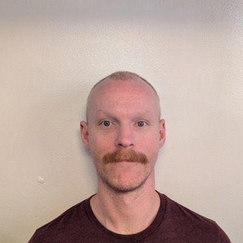

Mark Johnston
Mark is a long-time FreeBSD user and developer. He has worked on many different parts of the system, and is very interested in techniques for improving the reliability of systems software. He lives in Toronto, Canada, and when not at a computer, enjoys hiking and playing dodgeball on a team with friends.